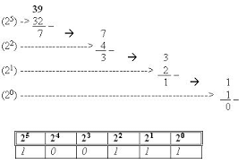

RGB-KLEUREN
RGB-KLEUREN is een afkorting van de primaire kleuren rood, groen en blauw. Dit kleurmodel kom je vaak tegen op je beeldscherm. De kleurmodel is op het begin kleurloos. De kleuren ontstaan wanneer er licht aan toe wordt gevoegd. Daarom is een beeldscherm dat uitstaat altijd zwart. Elke parameter (rood, groen, blauw) defineert de intensiteit van de kleur tussen de 0 en 255.
Voorbeeld
RGB (255, 0, 0) wordt weergegeven als rood, omdat rood is ingesteld op de hoogste waarde (255) en de andere zijn ingesteld op 0.
Om zwart weer te krijgen, stel je alle kleurparameters op 0. (RGB: 0 , 0, 0)
Om wit weer te krijgen, stel je alle kleurparameters in op 255. RGB( 255, 255, 255)
